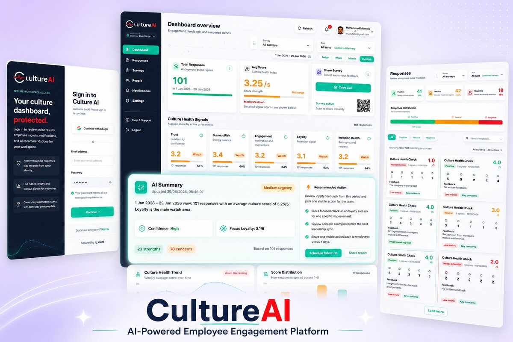
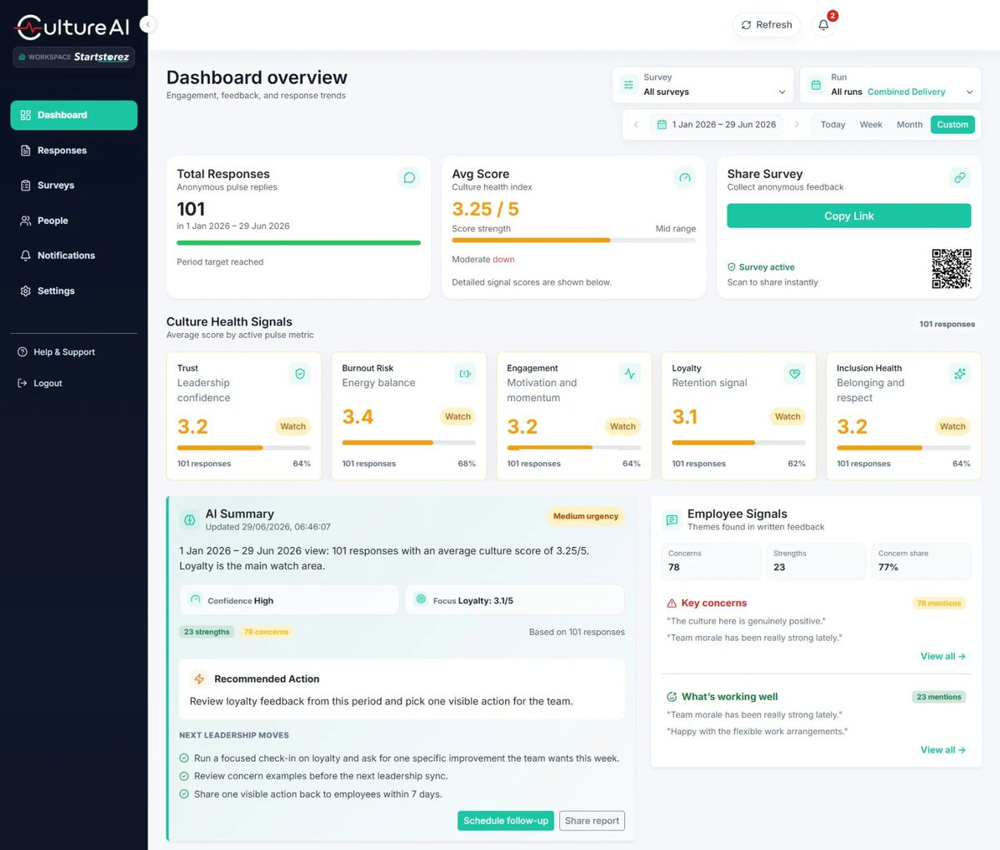
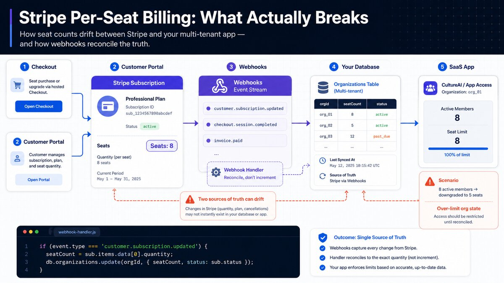

Anonymous pulse surveys
Custom survey templates on a 1 to 5 scale, sent by email, Slack, WhatsApp, SMS or a share link and QR code, to the whole company or a filtered segment.
Case study · AI SaaS product
This CultureAI case study shows how I designed, built and launched a multi-tenant AI SaaS for employee engagement on my own. CultureAI sends anonymous pulse surveys to teams, turns the answers into AI summaries and gives managers a clear next step, while every company's data stays separate and Stripe handles per-seat billing.
I'm the founder and the only engineer. Every decision on this page, from the data model to the billing webhooks, is one I made and still maintain in production.

Most employee engagement surveys fail in two places. People don't answer honestly when they think their manager can tell who said what. And the results arrive as a long report that nobody has time to read. By the time a real problem becomes visible, it often shows up in an exit interview.
I wanted a product that fixes both ends: honest input from employees, and output that a busy manager can act on in a few minutes.
What I built
CultureAI works in three steps: collect honest feedback, show where the problems are, and let AI turn hundreds of comments into a short plan.
Custom survey templates on a 1 to 5 scale, sent by email, Slack, WhatsApp, SMS or a share link and QR code, to the whole company or a filtered segment.
Scores for trust, burnout risk, engagement, loyalty and career growth, with weekly trends and a score distribution to spot outliers early.
Structured OpenAI prompts return JSON with a summary, key concerns, what's working well and recommended actions for leaders.
Every response is sorted as positive, neutral or negative, and low scores trigger a priority alert so leaders can act fast.
Each company's profile, branding, survey templates and audience are fully separate, with role-based access and sign-in through Clerk.
Free, Growth and Enterprise plans with per-seat billing through Stripe Checkout, the Customer Portal and webhooks. AI features are gated by plan.

CultureAI is multi-tenant: many companies use the same application and the same database. Each workspace is fully separate, from the company profile and branding to survey templates and the audience list. Every request is tied to one workspace on the server, never decided by the browser, so one company never sees another company's surveys, scores or AI summaries. Roles then decide what each person can do inside their own workspace.
Responses are stored without a link back to the person who wrote them, so leaders can't identify who said what. I didn't want anonymity to be a screen setting that someone could switch off later. If the link doesn't exist in the data, it can't leak.
The AI layer exists so a manager doesn't have to read hundreds of comments. The response data goes into structured OpenAI prompts that return JSON: a summary, key concerns, what's working well and recommended actions. Because the output is structured, each part lands in its own place on the dashboard instead of arriving as one block of text. The manager still decides what to do. For HR software I think that's the right boundary: AI saves the reading time, people own the decision.
Email, Slack, WhatsApp and SMS each have their own connection: Gmail OAuth for email, a Slack workspace OAuth, and Twilio for WhatsApp and SMS. Survey runs go out asynchronously, and delivery status is tracked for every person on every channel, so an admin can see who received the survey and where. Each person in the audience has a department, role, location, tags and a preferred channel, which makes it easy to target one segment per run.
Seat counts can change in three places: in my app, in the Stripe Customer Portal, and after a failed renewal. Early on I treated the checkout redirect as proof that a subscription had changed. That was backwards. Now every seat-related webhook overwrites the stored seat count with whatever Stripe says, instead of adding or subtracting based on what the app thinks happened.
// Simplified: reconcile, don't increment
app.post('/webhooks/stripe', async (req, res) => {
const event = stripe.webhooks.constructEvent(
req.body, req.headers['stripe-signature'], webhookSecret
);
if (event.type === 'customer.subscription.updated') {
const sub = event.data.object;
const orgId = sub.metadata.orgId; // saved at checkout time
const seatCount = sub.items.data[0].quantity;
// Overwrite, don't adjust: Stripe's number always wins
await db.organizations.update(orgId, { seatCount, status: sub.status });
}
res.json({ received: true }); // answer fast, process idempotently
});Two small details matter here. The organisation ID is saved in the subscription metadata at checkout, so the webhook doesn't need an extra lookup. And the handler answers Stripe quickly, because Stripe retries events that time out, and a slow handler ends up processing the same change twice.
Stripe doesn't know how many people actually use a workspace. If a company with 8 active members drops to 5 seats in the Stripe portal, that check has to live in the app. CultureAI compares seats with active members before a downgrade takes effect. If a downgrade already happened, it flags the organisation and asks an admin to remove members, instead of silently locking people out.

CultureAI is live at startcultureai.com with a free plan, and I still build and maintain it myself.
Tell me about the product and where it's stuck. You'll talk directly to the engineer who built CultureAI. See my AI SaaS development services for how I work.